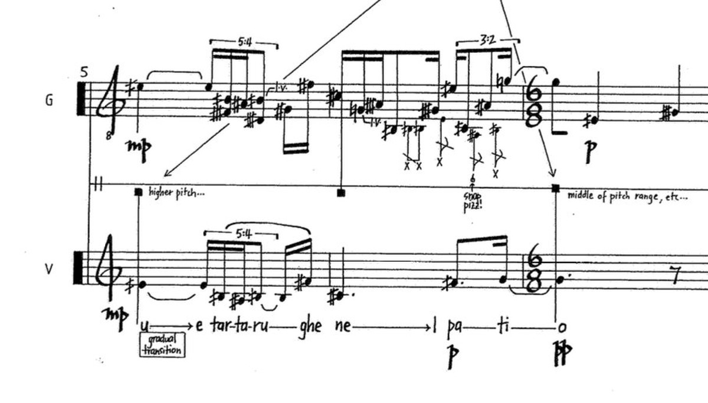

List of Works
A complete list of musical works, 1990–2014. Scores and recordings for most of these works are held at the Australian Music Centre.

Thousands of Bundled Straw, song 1 — score detail
· · ·
Opera & Music Theatre
The Minotaur Trilogy — with Margaret Cameron. Solo vocalists, double bass, harpsichord, mixed percussion. 147 min.
2011/2012
Overheard at Inveresk — miniature opera for soprano, percussion, choir, boy soprano, bicycles & electronics. 50 min.
2001
Maps — music theatre collaboration for soprano, recorder, violin, violoncello, percussion, chef. 2 hours.
2000
· · ·
Cross-artform Collaborations
So You Think You Can Cow — with Margaret Cameron & Jethro Woodward
2009
Schallmachine 06 — architecture/miniature percussion collaboration with Fritz Hauser, Boa Baumann, Speak Percussion & Rosemary Joy
2006
Oribotics [laboratory] — robotic origami installation for solo percussion & electronics
2005
Scale: Abstracts 01–04 & The Uninhabitable 01–07 — with Rosemary Joy & Cynthia Troup. Miniature percussion, toy piano & guitar. 30 min.
2005
Oribotics — robotic origami installation for solo percussion & electronics. 21 min.
2004
Skin Quartet — with Louisa Bufardeci. 2 violins, viola, violoncello. 37 min.
2003
Ricefields — with Sarah Pirrie & Rosemary Joy. Soprano, recorders, violin/viola, percussion & electronics. 70 min.
1998
· · ·
Orchestra
Enan — full orchestra. 6 min. 40 sec.
1992
· · ·
Chamber Ensemble
Esaurita — flugelhorn & prepared pianoforte. 16 min.
2010
Cryptonesia — violin & percussion. 10 min.
2007
I. A Leaf from the Book of Cities & II. Cooling in a Garden of the Torrid Zone — clarinet, tuba, violin, viola, violoncello, percussion, pianoforte. 7 min.
2006
Thousands of Bundled Straw VII — voice, recorder, oboe, clarinet, trumpet, trombone, violin, viola, cello, bass, piano, percussion. 11 min.
2005
Val Camonica Pieces: Roccia — violin, clarinet, percussion, pianoforte. 7 min.
2003
In an Initial C — soprano, recorder & guitar. 15 min.
2000
Thousands of Bundled Straw I — clarinet & violoncello. 6 min.
1999
Val Camonica Pieces: Inventario — flute, oboe, clarinets, horn, trombone, percussion, strings. 7 min.
1999
Val Camonica Pieces: Sarcophagus — 2 violins, 2 violas, 2 cellos, 2 basses. 6 min. 45 sec.
1999
Thousands of Bundled Straw II — bass recorder, oboe, trumpet, violin, percussion. 5 min.
1998
Thousands of Bundled Straw III — voice, oboe, violoncello, piano. 9 min.
1998
Thousands of Bundled Straw IV, V, VI — various forces. 21 min.
1997
rent — alto flute, oboe, clarinet, trumpet, trombone, violin, viola, contrabass, percussion. 10 min.
1997
Val Camonica Pieces: Lexicon — 3 violoncelli. 8 min. 30 sec.
1997
Val Camonica Pieces: Stile I, II, III — guitar & violoncello.
1996
Algor — violin, clarinet, marimba. 9 min.
1995
Ara — guitar & bass flute. 10 min.
1995
Spargere — 2 violins, 2 violas, 2 violoncellos. 7 min. 20 sec.
1994
scant — violoncello & ten-string guitar. 10 min.
1993
Escurial — violin & clarinet. 6 min.
1993
Gilgamesh — voice, guitar, trombone, violin, clarinet, percussion. 30 min.
1993
Pale — flute, clarinet, viola, guitar. 10 min. 30 sec.
1992
Il modello di modelli — soprano, baroque flute, baroque guitar. 7 min.
1992
Maxim IV: these ensuing lines — soprano voice & baroque flute. 3 min. 50 sec.
1992
Maxim — soprano & baroque flute. 5 min. 30 sec.
1991
Alimentary — flute, violin, oboe, piano. Variable duration.
1991
Amyrran — violoncello & percussion. 4 min.
1991
Music for Shared Timpani — 4 timpani, 8 performers. Variable duration.
1991
Partiality — chimes, glockenspiel, celeste, vibraphone, harp or piano, piano. 11 min.
1990
· · ·
Solo Instrumental
Not Music Yet — solo pianoforte. 7 or 42 min.
2012
No More Rock Groynes — solo double bass. 5 min.
2009
Natura Morta — solo percussion. 4 min.
2009
Schallmaschine 07 — solo miniature percussion. 7 hours 42 min.
2007
16 Boxes — solo percussion with assistant origamist. 11 min.
2005
Val Camonica Pieces: Incisioni Rupestri — solo pianoforte. 9 min.
2004
Val Camonica Pieces: Animali — violin. 9 min.
2002
In Search of Rare Grasshoppers — bass recorder & electronics. 8 min. 30 sec.
2002
Travelling — viola. 5 min. 10 sec.
1996
Aphis 10, 33, 36 — flute. 3 min.
1994
Koris 4, 25, 35 — alto trombone. 3 min.
1994
Otturato — clarinet. 7 min. 30 sec.
1992
Jasmine — guitar. 5 min.
1991
Ta ch’u (26) — ta chuang (34) — ocarina. 2 min. 30 sec.
1991
Oops — performer with vase of flowers. Variable duration.
1991
· · ·
Vocal
To Keep Things Reasonable — three voices, 2 percussion & viola. Text: Cynthia Troup. 7 min.
2007
Lacrimae rerum — six voices. 7 min.
2001
Ereshkigal — 7 songs for soprano & counter-tenor/flute. 30 min.
1993
Alala — harvest song — tenor voice. 3 min. 7 sec.
1993
· · ·
Document
David Young — List of Works, as at 2014